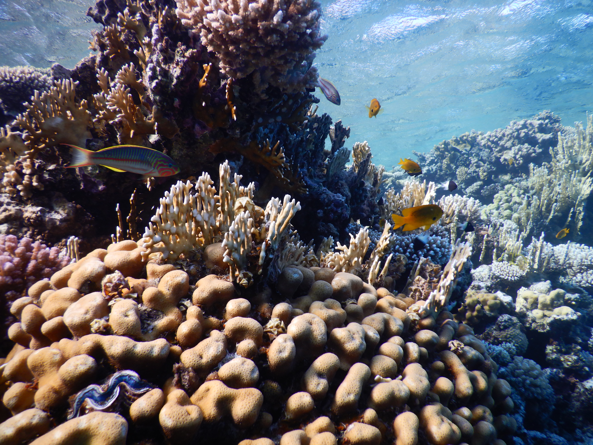
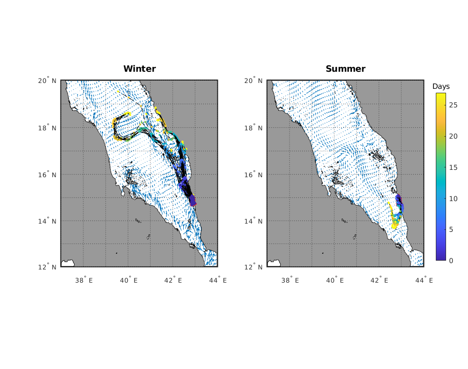

Scientists warn of likely massive oil spill endangering the Red Sea, region’s health
By Gregory Filiano | Stony Brook Medicine
Scientists produced a computer simulation of the spread of oil from the abandoned tanker in the Red Sea.The projection shows mass spread during winter compared to summer due to current patterns.The data shown was produced by running the model for 30 days.Oil spread even further from the tanker when the model ran for a longer period of time.
A paper to be published in
Frontiers in Marine Science on December 15 is calling for action to remove the oil from a decaying and inactive tanker in the Red Sea that holds approximately one million barrels of oil – four times the amount of oil contained in the Exxon Valdez, the tanker that had a disastrous environmental oil spill in 1989 – before its current seepage turns into a massive oil spill into the sea.The paper, a policy brief, is authored by a team of international scientists led by Karine Kleinhaus, MD, MPH, an Associate Professor of the School of Marine and Atmospheric Sciences (SoMAS) at Stony Brook University.
Called the
Safer , the tanker is a floating storage and offloading unit (FSO) abandoned for years, and with access controlled by Yemen’s Houthis.The paper, titled 'A Closing Window of Opportunity to Save a Unique Marine Ecosystem,' comes shortly after
The New York Times reported on November 24 that the Houthis will grant permission to a United Nations (UN) team to board the Safer to inspect and repair the vessel in the near future.
► Read original article ► Download original article (pdf)
'The time is now to prevent a potential devastation to the region’s waters and the livelihoods and health of millions of people living in half a dozen countries along the Red Sea’s coast,' says Dr. Kleinhaus.'If a spill from the
Safer is allowed to occur, the oil would spread via ocean currents to devastate a global ocean resource, as the coral reefs of the northern Red Sea and Gulf of Aqaba are projected to be among the last reef ecosystems in the world to survive the coming decades.'
She explained that the reason the coral reefs of the northern Red Sea are unique is because they survive in much warmer waters than today’s ocean temperatures, which are becoming too high for most coral to tolerate (over half of the Great Barrier Reef has degraded due to marine heat waves caused by climate change).Additionally, the fish living on the reefs off Yemen in the southern Red Sea are a major resource of food for the populations of the region, and the entire sea and its coral reefs are a highly biodiverse and rich ecosystem.
Dr. Kleinhaus and co-authors point out that in May 2020 seawater breached the
Safer and entered the engine compartment, and news agencies have reported oil spots next to the tanker, indicating likely seepage.The tanker has been abandoned since 2015, which the authors emphasize is a long advance warning of a decaying tanker poised to degrade to the point of a mass oil leak into the Red Sea.
The paper reveals a computer model of how the oil will disperse if a major leak begins this winter.The model shows that the oil will reach much further if the spill occurs now rather than in summer, due to the typical winter currents in that region of the Red Sea.A spill now will cause much broader and more extensive devastation as a result.
Despite the signs of the
Safer’s structural deterioration, access to the tanker has yet to be achieved and concrete steps to repair or to prevent an oil spill have yet to been taken, the authors point out.Dr. Kleinhaus adds that winter is the worst time to have an oil spill in that region, as winter currents will disperse oil much more widely.
The authors urge that 'Emergent action must be taken by the UN and its International Maritime Organization to address the threat of the
Safer , despite political tensions, as a spill will have disastrous environmental and humanitarian consequences, especially if it occurs during winter.With millions of barrels of oil, a day passing through the Red Sea, a regional strategy must be drafted for leak prevention and containment that is specific to the Red Sea’s unique ecosystems, unusual water currents, and political landscape.'
Original article: A closing window of opportunity to save a unique marine ecosystem
aperture':'2.8','credit':'','camera':'COOLPIX W300','caption':'','created_timestamp':'1571497191','copyright':'','focal_length':'4.3','iso':'125','shutter_speed':'0.003125','title':'','orientation':'1'}' data-image-title='frontiers-marine-science-oil-spill-red-sea-safer-tanker-health-hazard-1' data-large-file='https://frontiersinblog.files.wordpress.com/2020/12/frontiers-marine-science-oil-spill-red-sea-safer-tanker-health-hazard-1.jpg?w=940' data-medium-file='https://frontiersinblog.files.wordpress.com/2020/12/frontiers-marine-science-oil-spill-red-sea-safer-tanker-health-hazard-1.jpg?w=300' data-orig-file='https://frontiersinblog.files.wordpress.com/2020/12/frontiers-marine-science-oil-spill-red-sea-safer-tanker-health-hazard-1.jpg' data-orig-size='4608,3456' data-permalink='https://blog.frontiersin.org/frontiers-marine-science-oil-spill-red-sea-safer-tanker-health-hazard-1/' sizes='(max-width: 1024px) 100vw, 1024px' src='https://frontiersinblog.files.wordpress.com/2020/12/frontiers-marine-science-oil-spill-red-sea-safer-tanker-health-hazard-1.jpg?w=2048' srcset='https://frontiersinblog.files.wordpress.com/2020/12/frontiers-marine-science-oil-spill-red-sea-safer-tanker-health-hazard-1.jpg?w=1024 1024w, https://frontiersinblog.files.wordpress.com/2020/12/frontiers-marine-science-oil-spill-red-sea-safer-tanker-health-hazard-1.jpg?w=2048 2048w, https://frontiersinblog.files.wordpress.com/2020/12/frontiers-marine-science-oil-spill-red-sea-safer-tanker-health-hazard-1.jpg?w=150 150w, https://frontiersinblog.files.wordpress.com/2020/12/frontiers-marine-science-oil-spill-red-sea-safer-tanker-health-hazard-1.jpg?w=300 300w, https://frontiersinblog.files.wordpress.com/2020/12/frontiers-marine-science-oil-spill-red-sea-safer-tanker-health-hazard-1.jpg?w=768 768w'>
aperture':'0','credit':'','camera':'','caption':'','created_timestamp':'0','copyright':'','focal_length':'0','iso':'0','shutter_speed':'0','title':'','orientation':'0'}' data-image-title='frontiers-marine-science-health-hazard-risk-oil-spill-safer-tanker-red-sea' data-large-file='https://frontiersinblog.files.wordpress.com/2020/12/frontiers-marine-science-health-hazard-risk-oil-spill-safer-tanker-red-sea.png?w=940' data-medium-file='https://frontiersinblog.files.wordpress.com/2020/12/frontiers-marine-science-health-hazard-risk-oil-spill-safer-tanker-red-sea.png?w=300' data-orig-file='https://frontiersinblog.files.wordpress.com/2020/12/frontiers-marine-science-health-hazard-risk-oil-spill-safer-tanker-red-sea.png' data-orig-size='960,756' data-permalink='https://blog.frontiersin.org/frontiers-marine-science-health-hazard-risk-oil-spill-safer-tanker-red-sea/' sizes='(max-width: 960px) 100vw, 960px' src='https://frontiersinblog.files.wordpress.com/2020/12/frontiers-marine-science-health-hazard-risk-oil-spill-safer-tanker-red-sea.png' srcset='https://frontiersinblog.files.wordpress.com/2020/12/frontiers-marine-science-health-hazard-risk-oil-spill-safer-tanker-red-sea.png 960w, https://frontiersinblog.files.wordpress.com/2020/12/frontiers-marine-science-health-hazard-risk-oil-spill-safer-tanker-red-sea.png?w=150 150w, https://frontiersinblog.files.wordpress.com/2020/12/frontiers-marine-science-health-hazard-risk-oil-spill-safer-tanker-red-sea.png?w=300 300w, https://frontiersinblog.files.wordpress.com/2020/12/frontiers-marine-science-health-hazard-risk-oil-spill-safer-tanker-red-sea.png?w=768 768w'>
Posted On: 2020-12-15T00:00:00


Content Date: 2020-12-15
Download Date: 2021-07-10
Document ID: L0C04F38I